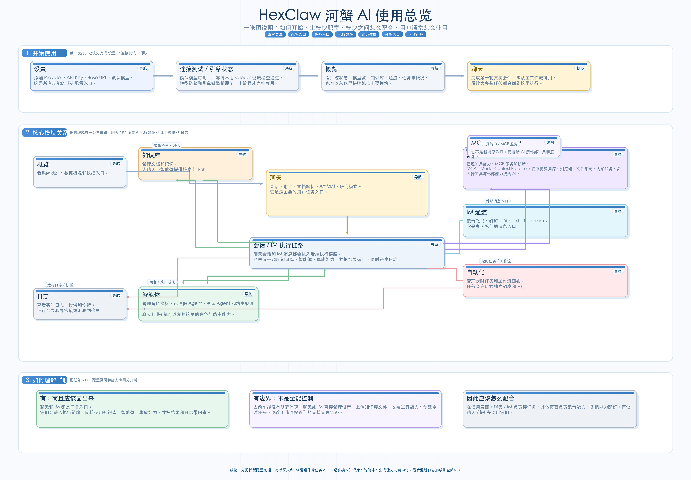
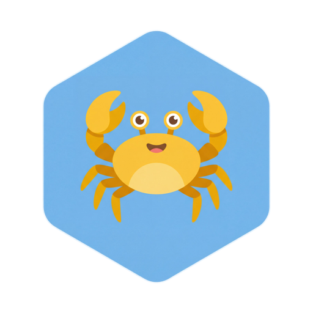

يېقىندا AI ساھەسىدە ئەڭ ئالقىشلانغان ھايۋان مۈشۈكمۇ، ئىتمۇ ئەمەس، بەلكى بىر «قىسقۇچپاقا» بولدى.
OpenClaw نىڭ ئالقىشلىنىشى پەقەت «پاراڭلىشالايدىغانلىقى» ئۈچۈنلا ئەمەس. ئۇ نۇرغۇن كىشىنىڭ AI Agent ھەققىدىكى تەسەۋۋۇرىنى، خىزمەت ئېقىمىنىڭ ئىچىگە ھەقىقىي ئورۇنلاشقان ياردەمچىگە ئايلاندۇردى. ئۇ Telegram، Slack، Discord، Lark قاتارلىق سىز ئىشلىتىپ كېلىۋاتقان كىرىش نۇقتىلىرىغا كىرەلەيدۇ، خەت ساندۇقىنى بىرلەشتۈرەلەيدۇ، ئۇچۇرغا ئاپتوماتىك جاۋاب بېرەلەيدۇ، توركۆرگۈچ ۋە ئۈستەل يۈزىنى كونترول قىلىپ ۋەزىپە ئىجرا قىلالايدۇ. يەرلىكتە ئىجرا بولۇش، مەخپىيەتلىكنى ئالدىنقى ئورۇنغا قويۇش، كۆپ مودېل ۋە Skill كېڭەيتىشكىمۇ ئەھمىيەت بېرىدۇ.
نۇرغۇن كىشىگە نىسبەتەن، بۇ «قىسقۇچپاقا» تۇنجى قېتىم «AI ياردەمچى»نى بىر پاراڭ رامكىسىدىن، ھەقىقىي ئىش قىلىدىغان، دائىم توردا تۇرىدىغان، ھەتتا ئۆزىگە خاس مىجەزى بار رەقەملىك خىزمەتداشقا ئايلاندۇردى. شۇڭا توردا «قىسقۇچپاقا باقتىڭىزمۇ؟»، قىسقۇچپاقا شەپكىسى، قىسقۇچ قول ئىشارىتى، «بىر كىشىلىك شىركەت + بىر قىسقۇچپاقا» دېگەندەك چاقچاقلار كۆپەيدى.
ئەسلىدە كىشىلەرنى قىزىقتۇرغىنى بىر تەلەي بەلگىسى ئەمەس، ئۇنىڭ ئارقىسىدىكى مۇشۇ كۈچلۈك تۇيغۇ:
- AI سوئالغا جاۋاب بېرىش بىلەنلا چەكلەنمەيدۇ
- AI ھەقىقىي «قول سېلىپ» ئىش قىلىشقا باشلىدى
- AI ئاخىرى بىر ياردەمچىدەك خىزمەت قىلىشقا باشلىدى
HexClaw بولسا باشقا بىر قاتلامدىكى مەسىلىنى ھەل قىلماقچى.
قىسقۇچپاقا تېخىمۇ كۆپ قولايلىق، قىزىقارلىق، دەرھال ئىشلىتىشكە بولىدىغان شەخسىي AI ياردەمچىگە ئوخشايدۇ؛ HexClaw بولسا ھەقىقىي خىزمەت ئېقىمىغا يۈزلەنگەن، بىلىمنى توپلايدىغان، Agent لارنى تەشكىللەيدىغان، ئىجرا زەنجىرىنى ئىزلايدىغان يەرلىك AI Agent خىزمەت سۇپىسى بولۇشنى كۆزلەيدۇ.
HexClaw، AI نى بىر پاراڭ كىرىش نۇقتىسىغا قاچىلاپلا توختىمايدۇ. ئۇ پاراڭ ۋە IM قانىلى نى ۋەزىپە كىرىش نۇقتىسى، بىلىم ئامبىرى / Agent / بىرلەشتۈرۈش نى ئىقتىدار ئاساسى قىلىپ، ئاندىن خاتىرە ۋە كاشىلا تەكشۈرۈشنىڭ يېپىق ھالقىسى نى تولۇقلايدۇ.
تېخىمۇ ئېنىق ئېيتقاندا، HexClaw رەسمىي تور بېكىتى بىر نۇقتىنى تەكىتلەپ كېلىدۇ: بۇ پەقەت «پاراڭ رامكىسىنى يەنە بىر قەۋەت ئورىغان» AI مەھسۇلاتى ئەمەس، بەلكى ئۆزى تەتقىق قىلىپ ياسىغان Hexagon AI Agent ماتورىنى ئاساس قىلغان، قاچىلاپلا ئىشلىتىشكە بولىدىغان AI Agent ئۈستەل يۈزى خېرىدارى. ئاساسلىق مەقسەت ئىقتىدارنى دۆۋىلەش ئەمەس، ئۇلارنى ھەقىقىي تەشكىللەش: كۆپ Agent ھەمكارلىقى、كۆرۈنۈشلۈك خىزمەت ئېقىمى、RAG بىلىم ئامبىرى、MCP قورال كېلىشىمى、IM قانىلى、دەل ۋاقتىدىكى خاتىرە — بۇ ئىقتىدارلارنىڭ ھېچقايسىسى كەم ئەمەس، شۇنىڭ بىلەن بىرگە سانلىق مەلۇمات ئىمكانقەدەر يەرلىكتە ساقلىنىدۇ.
ئىككىسىنى بىللە سېلىشتۇرساق، پەرق تېخىمۇ ئېنىق بولىدۇ:
- قىسقۇچپاقا AI نى ياردەمچىدەك ئىش قىلىشقا باشلىتىدۇ
- HexClaw AI نى خىزمەت سۇپىسىدەك مۇقىم يۈرگۈزىدۇ
تېخىمۇ يېيىپ ئېيتساق، HexClaw مۇشۇ مەسىلىلەرگە كۆپرەك ئەھمىيەت بېرىدۇ:
- AI پەقەت بىر قېتىملىق سۆھبەتنى قوبۇل قىلىپلا قالماي، داۋاملىق خىزمەت ۋەزىپىلىرىنى قوبۇل قىلىشى
- AI نى بىرلا كىرىش نۇقتىسىغا ئېلىپ كىرىش ئەمەس،
پاراڭ / IM قانىلى / ئاپتوماتلاشتۇرۇشنى ئوخشاش ئىجرا زەنجىرىگە يىغىشى - AI نىڭ قورال چاقىرىشى بىلەنلا چەكلەنمەي،
بىلىم ئامبىرى / Agent / بىرلەشتۈرۈش / MCP / ئاپتوماتلاشتۇرۇشنى يېپىق ھالقىغا تەشكىللىشى - پەقەت «قىلالايدىغان» بولۇشىلا ئەمەس، يەنە «كۆرگىلى، سۈرۈشتۈرگىلى، كاشىلىنى تەكشۈرگىلى ۋە ئۇزاق مۇددەت ئاسرىغىلى بولىدىغان» بولۇشى
- يەرلىكتە ئىجرا قىلىشنىلا ئەمەس، يەنە
Sidecar ئارخىتېكتۇرىسى、يەرلىك ئورۇنلاشتۇرۇش、بۇلۇتقا تايانماسلىق、سانلىق مەلۇماتنىڭ تولۇق شەخسىي بولۇشى
شۇڭا قىسقۇچپاقا Agent قىزغىنلىقىنى پۈتۈنلەي ياندۇرغان داڭلىق تۈرگە ئوخشىسا، HexClaw ھەقىقىي ھالدا ئۈستەل يۈزى خىزمەت ئېقىمىڭىزغا كىرىپ بارالايدىغان ئۈنۈمدارلىق تۈرىگە ئوخشايدۇ.
HexClaw نى بىر جۈملە بىلەن چۈشىنىش ئۈچۈن، ئالدى بىلەن مۇنى ئەستە تۇتسىڭىز بولىدۇ:
HexClaw بىرلا پاراڭ كۆزنىكى ئەمەس؛ ئۇ پاراڭ ۋە IM قانىلىنى ۋەزىپە كىرىش نۇقتىسى، بىلىم ئامبىرى / Agent / بىرلەشتۈرۈشنى ئىقتىدار ئاساسى، خاتىرىنى مەسىلە تەكشۈرۈش ھالقىسى قىلغان يەرلىك AI Agent خىزمەت سۇپىسى.
رەسمىي باش بەت بۇنى ئېنىق خۇلاسىلىگەن: ئۆزى تەتقىق قىلىپ ياسىغان Hexagon AI Agent ماتورىنى ئاساس قىلغان HexClaw، قاچىلاپلا ئىشلىتىشكە بولىدىغان AI Agent ئۈستەل يۈزى خېرىدارى. يەرلىك ئورۇنلاشتۇرۇش، شەخسىي سانلىق مەلۇمات، پۈتۈن قاتلاملىق ئوچۇق كود.
يەنە بىر مۇھىم نۇقتا، تور بېكەت بىلەن README دا قايتا تەكىتلىنىدۇ: HexClaw يەككە، باشقىلاردىن ئايرىلغان App ئەمەس، بەلكى hexagon-codes گۇرۇپپىسى قۇرغان پۈتۈن قاتلاملىق ئوچۇق كودلۇق AI Agent ئېكولوگىيەسىنىڭ بىر قىسمى.
بۇ ئېكولوگىيەدە پەقەت ئۈستەل يۈزى قېپىلا ئوچۇق كود قىلىنمىغان، بەلكى تۆۋەنكىدىن يۇقىرىقىغىچە قاتلاملار ئايرىپ لايىھەلەنگەن:
toolkit: خاتىرە، سەپلىمە، HTTP ۋە پاراللېللىق قاتارلىق ئورتاق ئىقتىدارلارغا مەسئۇل ئۇل قۇرۇلماai-core: LLM Provider، Embedding، Function Calling، ئەستە ساقلاش ۋە ۋېكتور ئىقتىدارلىرىغا مەسئۇل AI ئاساسىhexagon: ReAct، Plan-and-Execute، Workflow ۋە Tool ئورۇنلاشتۇرۇشىغا مەسئۇل، ئۆزى تەتقىق قىلىپ ياسىغان Agent ماتورىhexclaw: RESTful API، RAG ئىزدەش، Cron جەدۋەللەش، سۆھبەتنى داۋاملىق ساقلاش ۋە ماتور بىرلەشتۈرۈشىگە مەسئۇل ئارقا تەرەپ Sidecarhexclaw-desktop: يەرلىك ئەسلىي ئىجرا، Sidecar بىرلەشتۈرۈشى ۋە كۆپ سۇپىلىق تارقىتىشقا مەسئۇل ئۈستەل يۈزى خېرىدارىhexclaw-ui: مەھسۇلاتنىڭ ئاساسىي كۆرۈنمە يۈزى ۋە ئۈستەل يۈزى UI نى قايتا ئىشلىتىشكە مەسئۇل Web خېرىدارىhexagon-ui: ئىجرا زەنجىرىنى ئىزلاش، پىكىر يۈرگۈزۈشنى قايتا كۆرۈش ۋە ئۈنۈمنى كۆزىتىشكە مەسئۇل Agent كۆزىتىش سۇپىسى
HexClaw نىڭ «پەقەت بىر كىرىش ئەپنى ئوچۇق كود قىلىدىغان» نۇرغۇن مەھسۇلاتلاردىن پەرقى مۇشۇ. ئۇنىڭ ئارقىسىدا تولۇق ئوچۇق كودلۇق قورال زەنجىرى بار، ئۇ Apache-2.0 ئىجازەتنامىسى بىلەن تارقىتىلىدۇ. سىز كۆرۈۋاتقىنىڭىز پەقەت چۈشۈرگىلى بولىدىغان خېرىدار ئەمەس، بەلكى تەكشۈرگىلى، چۈشەنگىلى، قايتا ئىشلەتكىلى ۋە داۋاملىق تەرەققىي قىلدۇرغىلى بولىدىغان AI Agent قۇرۇلۇش سىستېمىسى.
مەھسۇلات نۇقتىسىدىن بۇ مۇنداق مەنىگە ئىگە:
- ئۇنى قاچىلاپلا ئىشلىتىشكە بولىدىغان ئۈستەل يۈزى خېرىدارى دەپ بىۋاسىتە ئىشلىتەلەيسىز
- ئۇنى يەرلىكنى ئالدىنقى ئورۇنغا قويغان، سانلىق مەلۇماتى شەخسىي AI Agent سۇپىسى دەپمۇ قارىيالايسىز
- ھەتتا ئۇنىڭ ئارقىسىدىكى ماتور، ئارقا تەرەپ، قورال كېلىشىمى ۋە كۆزىتىش سىستېمىسىنى تېخىمۇ چوڭقۇر چۈشىنەلەيسىز
تۆۋەندىكى سۈرەتتىن باشلىسىڭىز، ئۇنى قانداق ئىشلىتىش ۋە مودۇللارنىڭ قانداق ھەمكارلىشىدىغانلىقىنى چۈشىنىش ئاسانراق بولىدۇ:

HexClaw بىلەن تۇنجى قېتىم ئۇچراشقان بولسىڭىز، مۇنداق تەرتىپتە چۈشىنىشنى تەۋسىيە قىلىمەن:
- ئالدى بىلەن ئۇنى يەرلىك AI خىزمەت سۇپىسى دەپ قاراڭ
- ئاندىن
پاراڭۋەIM قانىلىنى ۋەزىپە كىرىش نۇقتىسى دەپ قاراڭ - ئاندىن
بىلىم ئامبىرى / Agent / بىرلەشتۈرۈشنى ئىقتىدار ئاساسى دەپ قاراڭ - ئاندىن
ئاپتوماتلاشتۇرۇشنى ئاكتىپ ئىجرا ئىقتىدارى دەپ قاراڭ - ئاخىرى
خاتىرەنى مەسىلە تەكشۈرۈشنىڭ يېپىق ھالقىسى دەپ قاراڭ
ئوچۇق كودلۇق ئېكولوگىيە
HexClaw نىڭ مۇھىم ئالاھىدىلىكى، پەقەت «بىر ئۈستەل يۈزى قېپى»نىلا ئوچۇق كود قىلماي، تۆۋەنكى ئۇل قۇرۇلمىدىن ئۈستەل يۈزى خېرىدارىغىچە پۈتكۈل زەنجىرنى ئوچۇق كود قىلىشىدۇر.

رەسمىي تور بېكەتنىڭ ھەققىدە بېتى ئۇنى مۇنداق تەرىپلەيدۇ: ئۇ hexagon-codes گۇرۇپپىسى قۇرغان پۈتۈن قاتلاملىق ئوچۇق كودلۇق AI Agent ئېكولوگىيەسى.
README بىلەن رەسمىي تور بېكەت ئامبىرىمۇ بۇ ئېكولوگىيە زەنجىرىنى بىردەك تەسۋىرلەيدۇ:
toolkit -> ai-core -> hexagon -> hexclaw -> hexclaw-desktop / hexclaw-ui / hexagon-uiبۇ زەنجىردىكى ھەر بىر قاتلامنىڭ ئېنىق مەسئۇلىيىتى بار:
toolkit: خاتىرە، سەپلىمە، HTTP، پاراللېللىق ۋە خاتالىق زەنجىرى قاتارلىق ئورتاق ئىقتىدارلارغا مەسئۇل ئۇل قۇرۇلماai-core: Provider ماسلاشتۇرۇش، Embedding، ئەستە ساقلاش ۋە ۋېكتور ئىقتىدارىغا مەسئۇل AI ئاساسىhexagon: ReAct، Plan-and-Execute، Workflow ۋە Tool ئورۇنلاشتۇرۇشىغا مەسئۇل، ئۆزى تەتقىق قىلىپ ياسىغان Agent ماتورىhexclaw: RESTful API، RAG ئىزدەش، Cron جەدۋەللەش، سۆھبەتنى داۋاملىق ساقلاش ۋە ماتور بىرلەشتۈرۈشىگە مەسئۇل ئارقا تەرەپ Sidecarhexclaw-desktop: يەرلىك ئەسلىي ئىجرا، Sidecar بىرلەشتۈرۈشى ۋە كۆپ سۇپىلىق تارقىتىشقا مەسئۇل ئۈستەل يۈزى خېرىدارىhexclaw-ui: مەھسۇلاتنىڭ ئاساسىي كۆرۈنمە يۈزى ۋە ئۈستەل يۈزى UI نى قايتا ئىشلىتىشكە مەسئۇل Web خېرىدارىhexagon-ui: ئىجرا زەنجىرىنى ئىزلاش، پىكىر يۈرگۈزۈشنى قايتا كۆرۈش ۋە ئۈنۈمنى كۆزىتىشكە مەسئۇل Agent كۆزىتىش سۇپىسى
HexClaw نىڭ «پەقەت بىر كىرىش ئەپنى ئوچۇق كود قىلىدىغان» نۇرغۇن مەھسۇلاتلاردىن پەرقى مۇشۇ. ئۇنىڭ ئارقىسىدا تولۇق ئوچۇق كودلۇق قورال زەنجىرى بار، ئۇ Apache-2.0 ئىجازەتنامىسى بىلەن تارقىتىلىدۇ. سىز كۆرۈۋاتقىنىڭىز پەقەت چۈشۈرگىلى بولىدىغان خېرىدار ئەمەس، بەلكى تەكشۈرگىلى، چۈشەنگىلى، قايتا ئىشلەتكىلى ۋە داۋاملىق تەرەققىي قىلدۇرغىلى بولىدىغان AI Agent قۇرۇلۇش سىستېمىسى.
بۇ نۇقتىدىن قارىغاندا، HexClaw بىر مەھسۇلات بولۇپلا قالماي، ئوچۇق تەرەققىي قىلىدىغان قۇرۇلۇش ئېكولوگىيەسىمۇ:
- ئادەتتىكى ئىشلەتكۈچى ئۈچۈن، ئۇ قاچىلاپلا ئىشلىتىشكە بولىدىغان ئۈستەل يۈزى خېرىدارى
- تېخنىكىلىق ئىشلەتكۈچى ئۈچۈن، ئۇ يەرلىكنى ئالدىنقى ئورۇنغا قويغان، سانلىق مەلۇماتى شەخسىي AI Agent سۇپىسى
- ئىجادكار ئۈچۈن، ئۇ يەنە داۋاملىق چوڭقۇر چۈشىنىپ ئۇلىغىلى بولىدىغان ئوچۇق كودلۇق ئىقتىدار قاتلىمى
تېخىمۇ كۆپ ماتېرىيال:
- رەسمىي تور بېكەت: hexclaw.net
- تور ھۆججەتلىرى: hexclaw.net/zh/docs/
- مەھسۇلات ئومۇمىي كۆرۈنۈشى: hexclaw.net/zh/docs/overview
- GitHub：github.com/hexagon-codes/hexclaw-desktop
ئەگەر سىز ئاللىبۇرۇن قىسقۇچپاقا بېقىپ باققان بولسىڭىز، دەريا قىسقۇچپاقىسى بېقىشنىمۇ سىناپ بېقىڭ.